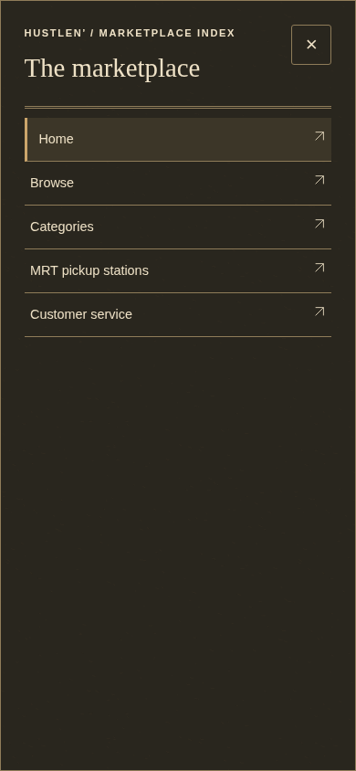
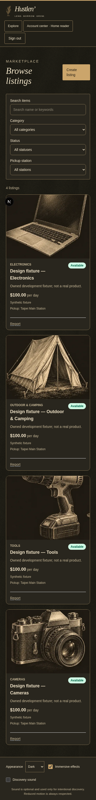

Hustlen’ / Batch 11B
Actual homepage and shared navigation. Provisional R1 design retained; final visual acceptance remains pending. All listing and account data in these unretouched screenshots is from labelled synthetic owned fixtures.
Evidence notes · Pre-change audit · Stage 9 follow-up
Homepage / desktop
Homepage / tablet
Homepage / mobile
Shared navigation and real filters
Explore sheet
Real Browse filters
No merge, push or deployment. No existing application database changed.